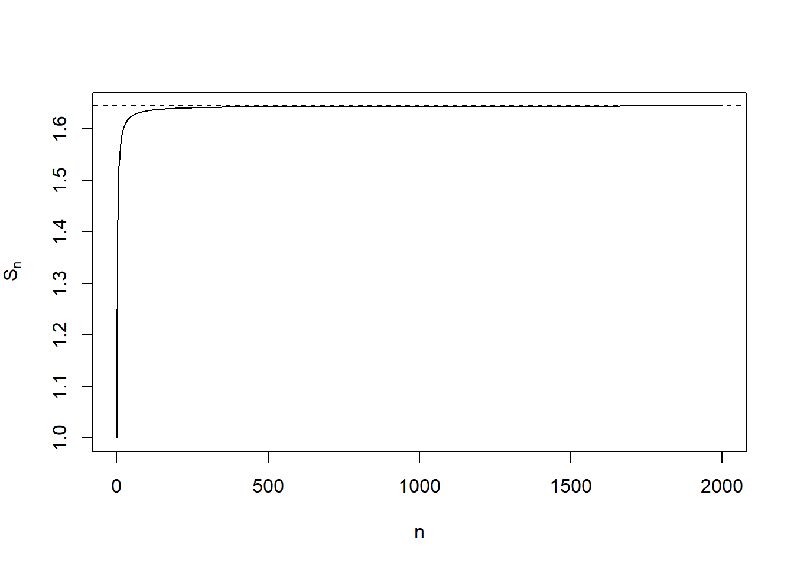
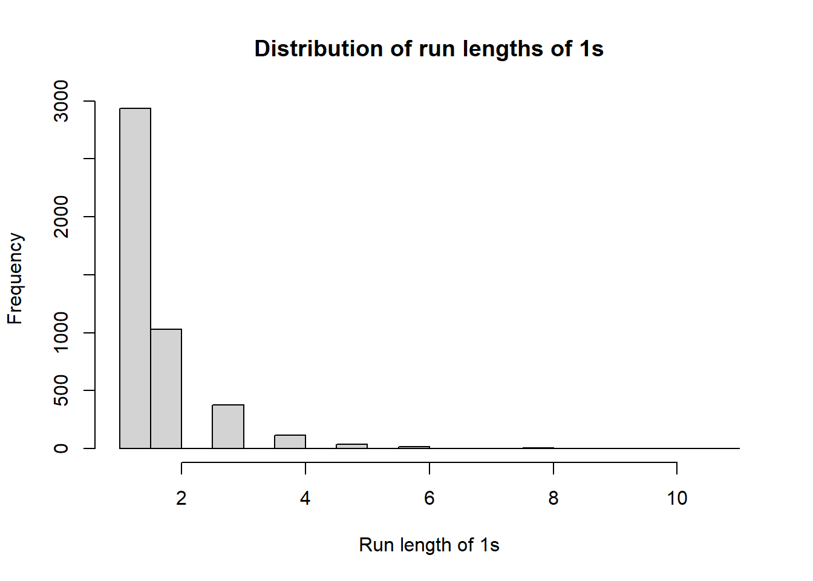

library(dslabs)Problem set 2 — Answer Key
For these exercises, do not load any packages other than dslabs.
1
What is the sum of the first 150 positive integers? Use the functions seq and sum to compute the sum with R for any n.
n <- 150
sum(seq(1, n))[1] 113252
Load the murders dataset from dslabs. Use str to examine the structure of the murders object.
- What are the column names used by the data frame for these five variables: state name, abbreviation, region, population, total murders?
- Show the subset of
murdersshowing states with less than 1.2 per 100,000 deaths. Show all variables.
str(murders)'data.frame': 51 obs. of 5 variables:
$ state : chr "Alabama" "Alaska" "Arizona" "Arkansas" ...
$ abb : chr "AL" "AK" "AZ" "AR" ...
$ region : Factor w/ 4 levels "Northeast","South",..: 2 4 4 2 4 4 1 2 2 2 ...
$ population: num 4779736 710231 6392017 2915918 37253956 ...
$ total : num 135 19 232 93 1257 ...# Column names for the requested variables
c("state", "abb", "region", "population", "total")[1] "state" "abb" "region" "population" "total" rate <- murders$total / murders$population * 100000
murders[rate < 1.2, ] state abb region population total
12 Hawaii HI West 1360301 7
13 Idaho ID West 1567582 12
16 Iowa IA North Central 3046355 21
20 Maine ME Northeast 1328361 11
24 Minnesota MN North Central 5303925 53
30 New Hampshire NH Northeast 1316470 5
35 North Dakota ND North Central 672591 4
38 Oregon OR West 3831074 36
42 South Dakota SD North Central 814180 8
45 Utah UT West 2763885 22
46 Vermont VT Northeast 625741 2
51 Wyoming WY West 563626 53
Show the subset of murders showing states with less than 1.2 per 100,000 deaths and in the Northeast of the US. Don’t show the region variable.
rate <- murders$total / murders$population * 100000
out <- murders[rate < 1.2 & murders$region == "Northeast", ]
out[, names(out) != "region"] state abb population total
20 Maine ME 1328361 11
30 New Hampshire NH 1316470 5
46 Vermont VT 625741 24
Among states with a murder rate less than 1.2 per 100,000, show the smallest population state (state name, population, and rate).
rate <- murders$total / murders$population * 100000
low <- rate < 1.2
i <- which(low)[which.min(murders$population[low])]
data.frame(state = murders$state[i], population = murders$population[i], rate = rate[i]) state population rate
1 Wyoming 563626 0.88711315
Show the state with a population of more than 8 million with the lowest murder rate (state name, population, and rate).
rate <- murders$total / murders$population * 100000
big <- murders$population > 8e6
i <- which(big)[which.min(rate[big])]
data.frame(state = murders$state[i], population = murders$population[i], rate = rate[i]) state population rate
1 New York 19378102 2.667966
Compute the murder rate for each region of the US (total murders / total population * 100,000). Return a data frame with one row per region and columns region and rate.
murders_by_region <- tapply(murders$total, murders$region, sum)
pop_by_region <- tapply(murders$population, murders$region, sum)
rate_by_region <- murders_by_region / pop_by_region * 100000
data.frame(region = names(rate_by_region), rate = as.numeric(rate_by_region)) region rate
1 Northeast 2.655592
2 South 3.626558
3 North Central 2.731334
4 West 2.6561757
Create a vector of numbers starting at 5, not passing 60, in increments of 3/8. How many numbers are in the list?
v <- seq(from = 5, to = 60, by = 3/8)
length(v)[1] 1478
Make the data frame below and add Celsius temperatures.
temp_f <- c(72, 95, 41, 86, 78, 33)
city <- c("Chicago", "Lagos", "Oslo", "Rio de Janeiro",
"San Juan", "Toronto")
city_temps <- data.frame(name = city, temperature_f = temp_f)
city_temps name temperature_f
1 Chicago 72
2 Lagos 95
3 Oslo 41
4 Rio de Janeiro 86
5 San Juan 78
6 Toronto 33city_temps$temperature_c <- (city_temps$temperature_f - 32) * 5/9
city_temps name temperature_f temperature_c
1 Chicago 72 22.2222222
2 Lagos 95 35.0000000
3 Oslo 41 5.0000000
4 Rio de Janeiro 86 30.0000000
5 San Juan 78 25.5555556
6 Toronto 33 0.55555569
Write a function euler2 that computes (S_n = _{k=1}^n 1/k^2). Test at n=10 and n=100.
euler2 <- function(n) sum(1/(seq(1, n)^2))
euler2(10)[1] 1.549768euler2(100)[1] 1.63498410
Plot (S_n) versus (n) for (n=1,,2000) with a horizontal dashed line at (^2/6).
n_vals <- 1:2000
S <- sapply(n_vals, euler2)
plot(n_vals, S, type = "l", xlab = "n", ylab = expression(S[n]))
abline(h = pi^2/6, lty = 2)
11
Use %in% and state.abb to check which of these are real state abbreviations: AL, AK, AZ, AR, AA.
test <- c("AL", "AK", "AZ", "AR", "AA")
test %in% state.abb[1] TRUE TRUE TRUE TRUE FALSE12
Report the one entry that is not an actual abbreviation.
test <- c("AL", "AK", "AZ", "AR", "AA")
test[which(!(test %in% state.abb))][1] "AA"13
In the murders dataset, use %in% to show all variables for Florida, California, and New York, in that order.
targets <- c("Florida", "California", "New York")
sub <- murders[murders$state %in% targets, ]
sub[match(targets, sub$state), ] state abb region population total
10 Florida FL South 19687653 669
5 California CA West 37253956 1257
33 New York NY Northeast 19378102 51714
Write vandermonde_helper2(x, n) that returns ((1, x, x^2, , x^n)). Show results for x=2, n=6.
vandermonde_helper2 <- function(x, n) x^(0:n)
vandermonde_helper2(2, 6)[1] 1 2 4 8 16 32 6415
Simulate Bernoulli data and compute run lengths of consecutive 1s (no loop). Plot distribution. Compare empirical proportions for run lengths 1–8 to geometric theory.
n <- 20000
p <- 0.35
set.seed(2025-9-18)
x <- sample(c(0,1), n, prob = c(1 - p, p), replace = TRUE)r <- rle(x)
ones_lengths <- r$lengths[r$values == 1]
hist(ones_lengths, breaks = 30, xlab = "Run length of 1s",
main = "Distribution of run lengths of 1s")
tab <- table(ones_lengths)
emp_counts <- as.numeric(tab[as.character(1:8)])
emp_counts[is.na(emp_counts)] <- 0
emp_probs <- emp_counts / length(ones_lengths)
k <- 1:8
theory_probs <- (1 - p) * p^(k - 1)
data.frame(run_length = k, empirical_prob = emp_probs, theory_prob = theory_probs) run_length empirical_prob theory_prob
1 1 0.6491810536 0.6500000000
2 2 0.2273129703 0.2275000000
3 3 0.0836653386 0.0796250000
4 4 0.0254537406 0.0278687500
5 5 0.0084108012 0.0097540625
6 6 0.0042054006 0.0034139219
7 7 0.0006640106 0.0011948727
8 8 0.0008853475 0.000418205416
In murders, compute the national average murder rate. Label states using ifelse:
- “High Crime, High Pop” if rate > national avg and pop > 6 million
- “High Crime, Low Pop” if rate > national avg and pop ≤ 6 million
- “Lower Crime” otherwise Then show a table of counts.
rate <- murders$total / murders$population * 100000
national_rate <- sum(murders$total) / sum(murders$population) * 100000
high_crime <- rate > national_rate
high_pop <- murders$population > 6e6
labels <- ifelse(high_crime & high_pop, "High Crime, High Pop",
ifelse(high_crime & !high_pop, "High Crime, Low Pop",
"Lower Crime"))
table(labels)labels
High Crime, High Pop High Crime, Low Pop Lower Crime
9 10 32 17
What is the murder rate of the state that ranks 12th in murder rate (highest to lowest)? Show work using order (optionally check with sort and rank).
rate <- murders$total / murders$population * 100000
ord <- order(rate, decreasing = TRUE)
i <- ord[12]
data.frame(rank = 12, state = murders$state[i], rate = rate[i]) rank state rate
1 12 Tennessee 3.45093618
Write compute_harmonic_mean(x) returning the harmonic mean, but NA if any values are zero/negative. Test on c(1,2,4,8).
compute_harmonic_mean <- function(x) {
if (any(x <= 0)) return(NA_real_)
length(x) / sum(1/x)
}
compute_harmonic_mean(c(1, 2, 4, 8))[1] 2.13333319
Create safe_divide(x, y) returning x/y, but “Cannot divide by zero” when y is 0. Vectorized. Test on x <- c(10,20,30) and y <- c(2,0,5).
safe_divide <- function(x, y) {
out <- x / y
out <- as.character(out)
out[y == 0] <- "Cannot divide by zero"
out
}
x <- c(10, 20, 30)
y <- c(2, 0, 5)
safe_divide(x, y)[1] "5" "Cannot divide by zero" "6" 20
Write classify_state_safety(state_name) based on murder rate:
- “Very Safe” if rate < 1
- “Safe” if 1 ≤ rate < 3
- “Moderate” if 3 ≤ rate < 5
- “High Risk” if rate ≥ 5 If state not found, return “State not found”.
Test on “Vermont”, “Texas”, “California”, “NotAState”. Then classify all states with sapply and tabulate categories.
rate <- murders$total / murders$population * 100000
rate_named <- setNames(rate, murders$state)
classify_state_safety <- function(state_name) {
if (!(state_name %in% names(rate_named))) return("State not found")
r <- rate_named[state_name]
if (r < 1) "Very Safe"
else if (r < 3) "Safe"
else if (r < 5) "Moderate"
else "High Risk"
}
classify_state_safety("Vermont")[1] "Very Safe"classify_state_safety("Texas")[1] "Moderate"classify_state_safety("California")[1] "Moderate"classify_state_safety("NotAState")[1] "State not found"cats <- sapply(murders$state, classify_state_safety)
table(cats)cats
High Risk Moderate Safe Very Safe
4 15 20 12